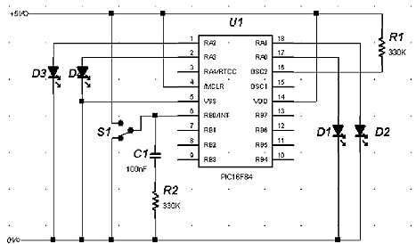

Interrupts - Writing The Code
We covered quite a bit of ground in the last tutorial,
and so we think it is time that we wrote our first program. The program
we are going to write will count the number of times we turn a switch
on, and then display the number. The program will count from 0 to 9,
displayed on 4 LEDs
in binary form, and the input or interrupt will be on RB0.
The first thing we need to do is tell the PIC to
jump over the address where the Program Counter points to when an interrupt
occurs. You will notice that We are using a different way of expressing
hexadecimal numbers. Before We used to use F9h where h denoted
hexadecimal. We can write this as 0xF9, and this is the format we are
going to use from now on.
org
0x00 ;This
is where
the PC points to on power up and reset
goto main ;Goto
our main program
org
0x04
;This is where our interrupt routine will start
retfie
;This tells
the PIC that the interrupt routine has
;finished and the PC will point back to the main
;program
main
;This is the start of our main program
Now we need to tell the PIC that we are going to use interrupts, and we are using RB0 pin 6 as an interrupt pin:
bsf
INTCON,7 ;GIE – Global interrupt enable
(1=enable)
bsf
INTCON,4 ;INTE - RB0 interrupt enable
(1=enable)
We are going to clear the interrupt flag just in case (We never trust anything!)
bcf
INTCON,1 ;INTF - Clear flag bit just in
case
Now we need to set up our two ports. Remember that as we are
using RB0 as an interrupt pin, this must be set up as an input:
bsf STATUS,5
;Switch to Bank 1
movw 0x01
;
movwf TRISB
;Set RB0 as input
movlw
0x10
;
movwf TRISA
;Set the first 4 pins on PortA as output
bcf STATUS,5
;Come back to Bank 0
We are going to use a variable called COUNT to store the number of switch counts. We could
just simply increment the value on Port A, but you will see why we are using a variable when we write our interrupt routine.
loop
movf
COUNT,0 ;Move the
contents of COUNT into W
movwf
PORTA
;Now move it to Port A
goto
loop
;Keep
on doing this
end
;End
of our program
So, our main program is written, and now we need to tell the PIC what
to do when an interrupt happens. In this instance, our interrupt
is going to be the switch. What we want the PIC to is add one to
the variable COUNT each time the switch is closed. However, we only
want to display the number of times the switch closes from 0 to 9.
Above, We said we could have just simply incremented the value on Port A
each time there was an interrupt. But, Port A has 5 bits, and if
we just simply incremented the port, we will have a maximum count of
31. There are two reasons why we chose not to go up to 31. First,
we are going to use a 7-segment display, which can at the most only go
from 0 to 15 (0 to F in hex). Secondly, We also want to show you
some of the arithmetic commands that you came across in the last couple
of tutorials.
So lets get on with our interrupt routine.
Now the first thing we need to do is temporarily store the contents
of our w register, as we are using this to transfer the contents of
COUNT to PORTA. If we don’t store it, then we could send a completely
different number as a
result of our arithmetic. So let’s do that first:
movwf
TEMP
;Store w register in a temporary location
Next we want to add 1 to our variable COUNT:
incf
COUNT,1 ;Increment COUNT by 1, and
put the result
;back
into COUNT
Next we want to do a check on COUNT to se if we have gone past the value of
9. The way we can do this is to subtract it from 10.
movlw
0x0A ;Move
the value 10 into w
subwf
COUNT,0 ;Subtract w from COUNT,
and put the
;result
in w
From tutorial 8 we saw that if we subtract a large number from a small number
a Carry flag will be set. This flag will also be set if the numbers are
equal, and we subtract them.
btfss
STATUS,0 ;Check the Carry flag. It will be set if
;COUNT
is equal to, or is greater than w,
;and will be set as a result of the subwf
;instruction
Now we know if the value of COUNT is 9 or more. What we want to
do now is if COUNT is greater than 9, put it back to 0, otherwise go
back to the main program so that we can send it to Port A. The BTFSS
command as you know will skip the next instruction if the carry flag is
set i.e COUNT = 10:
goto
carry_on ;If COUNT is
<10, then we can carry on
goto
clear ;If
COUNT is >9, then we need to clear it carry_on
bcf
INTCON,0x01 ;We need to clear this flag to enable
;more interrupts movfw
TEMP ;Restore w to the value before the interrupt
retfie
;Come
out of the interrupt routine
clear
clrf
COUNT ;Set
COUNT back to 0
bcf
INTCON,1 ;We need
to clear this flag to enable ;more interrupts
retfie ;Come out of the interrupt routine
All that is left to do now is put everything together and also define
values to our constants, which we can do right at the beginning of our
program.
Below is the complete program listing. The circuit is shown
after the program listing. Every time you turn the switch on, the
LEDs will count up in binary from 0000 to 1010 then back to 0000.
org
0x00
;This is where we come on power up and reset
;*******************SETUP CONSTANTS*******************
INTCON EQU 0x0B ;Interrupt Control Register
PORTB EQU 0x06 ;Port B register address
PORTA EQU 0x05 ;Port A register address
TRISA EQU 0x85 ;TrisA register address
TRISB EQU 0x86 ;TrisB register address
STATUS EQU 0X03 ;Status register address
COUNT EQU
0x0c ;This will be our counting
variable
TEMP
EQU 0x0d ;Temporary store for w register
goto
main ;Jump over the interrupt address
;***************INTERRUPT ROUTINE***************
org
0x04 ;This
is where PC points on an interrupt
movwf
TEMP
;Store the value of w temporarily
incf
COUNT,1 ;Increment COUNT by 1, and
put the result
;back into COUNT
movlw 0x0A ;Move the value 10 into w
subwf
COUNT,0 ;Subtract w from COUNT, and
put the result in w
btfss
STATUS,0 ;Check the Carry flag. It
will be set if
;COUNT
is equal to, or is greater than w,
;and
will be set as a result of the subwf
;instruction
goto
carry_on
;If COUNT is <10, then we can carry on
goto
clear
;If COUNT is >9, then we need to clear it
carry_on
bcf
INTCON,0x01 ;We need to clear this flag to enable
;more
interrupts
movfw TEMP ;Restore w to the value before the interrupt
retfie
;Come out of the
interrupt routine
clear
clrf
COUNT ;Set COUNT
back to 0
bcf
INTCON,1 ;We need to clear this flag to
enable
;more interrupts
retfie ;Come out of the interrupt routine
;*******************Main Program*********************
main
;*******************Set Up The Interrupt Registers****
bsf
INTCON,7 ;GIE – Global interrupt enable
(1=enable) bsf
INTCON,4 ;INTE - RB0 Interrupt Enable
(1=enable) bcf
INTCON,1 ;INTF - Clear FLag Bit Just In
Case
;*******************Set Up The Ports******************
bsf
STATUS,5
;Switch to Bank 1
movlw 0x01
movwf TRISB
;Set RB0 as input
movlw 0x10
movwf TRISA ;Set R 0 to RA3 on PortA as output
bcf
STATUS,5 ;Come back to Bank 0
;*******************Now Send The Value Of COUNT To Port A
loop
movf
COUNT,0 ;Move the contents of Count
into W
movwf
PORTA ;Now
move it to Port A
goto
loop ;Keep
on doing this
end
;End Of Program
The Circuit Diagram
Below is the circuit diagram that will work for
the code above. There are two things in the diagram that may throw
you. First, We have not included a timing capacitor in the
oscillator circuit. This is a clever little trick that you can try
if you run out of capacitors. The capacitance comes from the stray
capacitance between the oscillator pin and ground. so, with the
resistor and the stray capacitance, we have an RC oscillator. Okay,
this is not an accurate way of doing it, as the stray capacitance will
vary from circuit to circuit. But, We thought you may be interested
in seeing this sort of thing. Secondly, We have included a
de-bouncing circuit across the switch. This is needed because every
time you flick a switch, the contacts will bounce. This will make
the PIC think there have been more than one switches. With the
de-bouncing circuit, when the switch goes high, the capacitor charges
up. no matter how many times the switch goes to +5V, the capacitor
will only charge once. The capacitor is discharged when the switch
is thrown the other way. If you want to see the effects of switch
bounce, then disconnect the capacitor and resistor across the switch.

Click here >>>> Tutorial 13
|